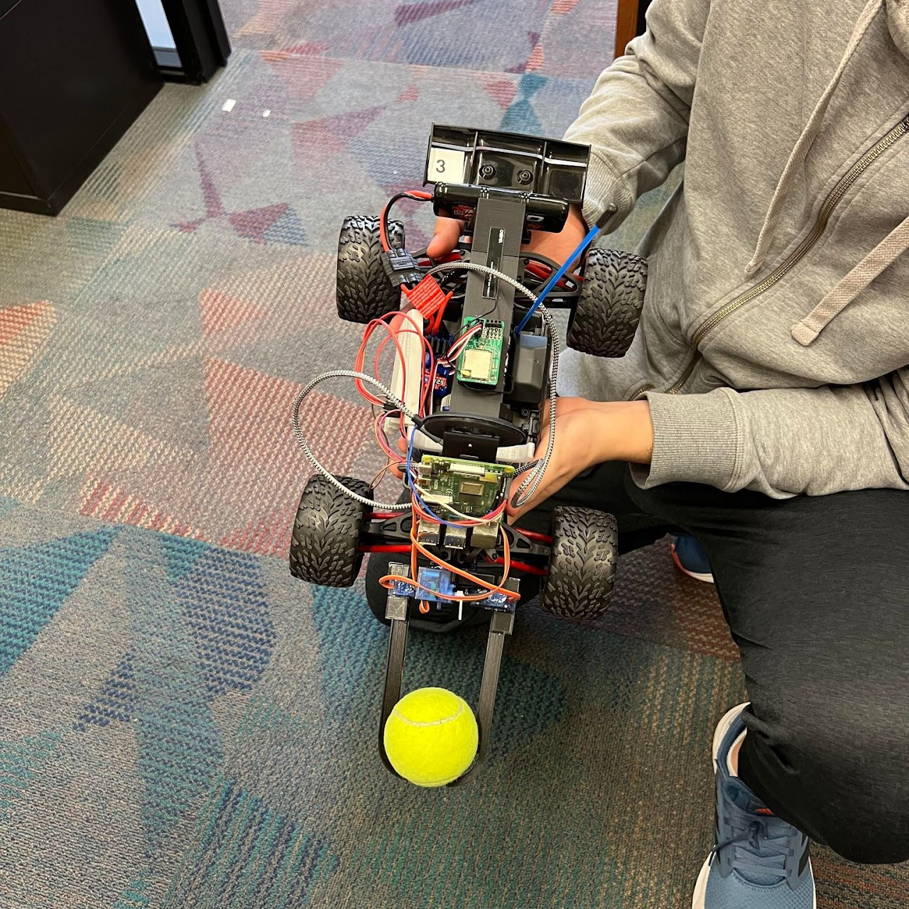
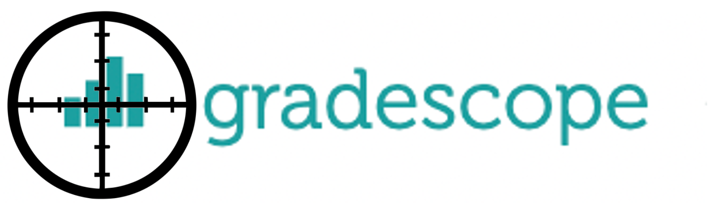

MATER
MATER is a robotics research project that explores Autonomous Vehicular Pick-and-Place in an Unknown Environment. We built a custom gripper onto an existing RC car and implemented sensing, planning, and actuation algorithms so that the car can drive around an unknown room until it finds a tennis ball, then pick it up and bring it back to where it started.
We implemented a PID controller, object detection, random exploration, and code to open and close our custom 3D Printed Gripper.
The MATER project has its own website, explaining the project in much greater depth. Please check it out!

Sign-ify
The iOS app Sign-ify, developed for CalHacks 6.0, enables enhanced live-lecture for members
of the hearing-impaired community by intelligently converting a professor's speech to a sequence of American Sign Language (ASL) videos for
the user to watch during lecture. There is a dissonance in grammatical structure and syntax between written language and
ASL (reading in english rather than ASL is akin to reading in a non-native language). Sign-ify is able to translate professors’ dictation to
pre-recorded ASL videos in near-real time, eliminating the need for students to interpret written English and having to “translate it” into ASL as they process information.
Sign-ify was an award winning project at CalHacks 6.0! Please check out the DevPost for more information!
Edify
Edify allows Professors and TAs to gather insights about class engagement and questions from a recorded Zoom meeting. This application takes in the Zoom Video recording, Zoom chat transcript, and Zoom audio transcript, which can be generated from a recorded meeting. We use computer vision to analyze how often the students are looking at the computer screen and paying attention. We also use Natural Language Processing (NLP) to provide sentiment analysis and topic clustering for the questions posed in the audio transcript and chat box. We then email these charts and statistics to an email address passed in to the Web-application.
RecipeBot
RecipeBot is a chat-bot compatible with Google Assistant that recommends recipes based upon spare ingredients a user
inputs. The bot has been trained on more than 1000 ingredients.

GradeScoper
GradeScoper is a chrome extension that scrapes Gradescope for assignment deadlines and adds them to a Google Calendar.

Speech Matrix Solver
Speech Matrix Solver is a web application our team built in order to solve complex systems of equations by performing Gaussian Elimination on an augmented matrix verbally dictated by the user. Both the Gaussian Elimination backend and frontend were built from scratch using JavaScript and HTML5.